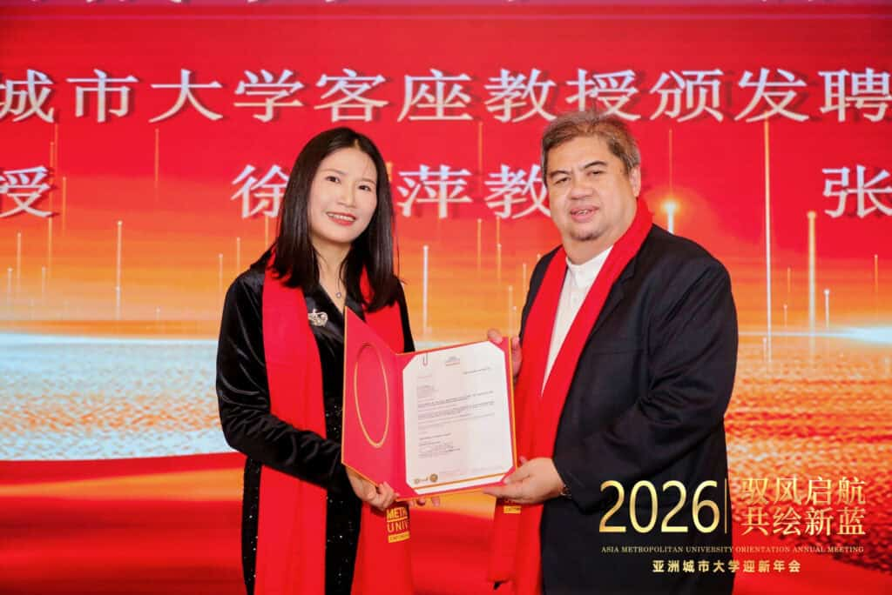
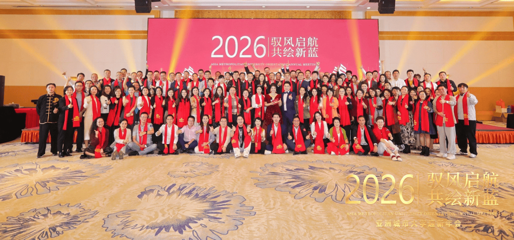
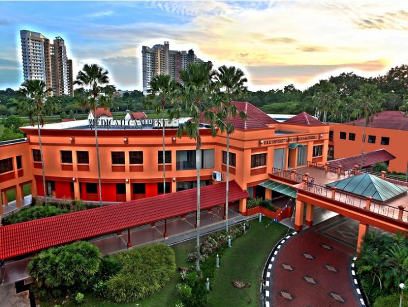
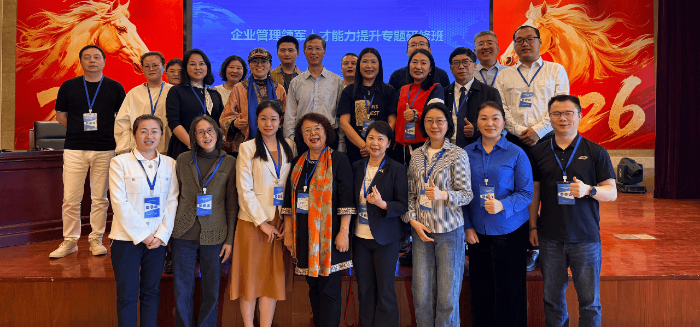
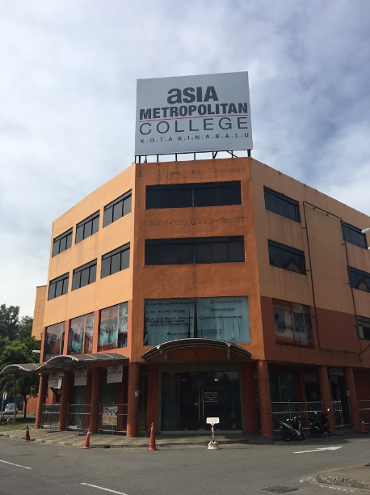

University overview
About Asia Metropolitan University
Established in 2004, Asia Metropolitan University (AMU) has grown into a dynamic private university focused on delivering career-oriented education. Originally founded as the Masterskill School of Nursing and Healthcare, AMU achieved full university status in 2012 and expanded its academic portfolio into Business Management, Information Technology, Computer Science, and Allied Health Sciences.
Fully accredited by the Malaysian Qualifications Agency (MQA) and recognized internationally by the Accreditation Service for International Schools, Colleges & Universities (ASIC), AMU provides industry-focused diplomas, bachelor's degrees, and postgraduate qualifications designed to equip graduates with practical skills for the modern workforce.





International students
Study at Asia Metropolitan University as an international student
Compare Asia Metropolitan University courses, campuses, fees and entry requirements for your intended intake.
Programmes and tuition
Asia Metropolitan University AMU courses and fees for international students
| No | Programmes | Duration (Months) | Total Semester | Processing Fee (RM) | Visa Application Fee (RM) | Registration Fee (RM) | Published Tuition Fee (RM) | Est. Disc. (%) | Adjusted Tuition Fee (RM) | Total (RM) |
|---|---|---|---|---|---|---|---|---|---|---|
| 1 | Foundation in Business Studies | 12 | 3 | 1,500 | 2,800 | 2,000 | 18,000 | 36% | 11,600 | 17,900 |
| 2 | Foundation in Information Technology | 12 | 3 | 1,500 | 2,800 | 2,000 | 19,300 | 30% | 13,500 | 19,800 |
Schedule remarks:
Note: All fees displayed are exclusive of 6% SST. Administrative and processing fees are non-refundable.
Download FOUNDATION STUDIES AND CERTIFICATES PROGRAMME (ZIP)
| No | Programmes | Duration (Months) | Total Semester | Processing Fee (RM) | Visa Application Fee (RM) | Registration Fee (RM) | Published Tuition Fee (RM) | Est. Disc. (%) | Adjusted Tuition Fee (RM) | Total (RM) |
|---|---|---|---|---|---|---|---|---|---|---|
| 1 | Diploma In Healthcare | 36 | 9 | 1,500 | 2,800 | 2,000 | 67,500 | 37% | 42,500 | 48,800 |
| 2 | Diploma in Business Administration | 30 | 7 | 1,500 | 2,800 | 2,000 | 42.800 | 36% | 27,500 | 33,800 |
| 3 | Diploma in Information Technology | 30 | 7 | 1,500 | 2,800 | 2,000 | 48,000 | 32% | 32,500 | 38,800 |
| 4 | Diploma in Accounting | 24 | 6 | 1,500 | 2,800 | 2,000 | 46,100 | 36% | 29,500 | 35,800 |
Schedule remarks:
Note: All fees displayed are exclusive of 6% SST. Administrative and processing fees are non-refundable.
| No | Programmes | Duration (Months) | Total Semester | Processing Fee (RM) | Visa Application Fee (RM) | Registration Fee (RM) | Published Tuition Fee (RM) | Est. Disc. (%) | Adjusted Tuition Fee (RM) | Total (RM) |
|---|---|---|---|---|---|---|---|---|---|---|
| 1 | Bachelor of Science (Hons) Healthcare Mariagement | 48 | 8 | 1,500 | 2.800 | 2,000 | 101,500 | 29% | 72,500 | 78.800 |
| 2 | Bachelor of Accountancy (Honours) | 44 | 11 | 1,500 | 2,800 | 2,000 | 73,000 | 6% | 68,500 | 74,800 |
| 3 | Bachelor in Informational Technology (Honours) | 36 | 9 | 1,500 | 2,800 | 2,000 | 81,600 | 28% | 58.500 | 64.800 |
| 4 | Bachelor of Business Administration (Hons) | 36 | g | 1,500 | 2,800 | 2,000 | 64,500 | 25% | 48,500 | 54,800 |
Schedule remarks:
Note: All fees displayed are exclusive of 6% SST. Administrative and processing fees are non-refundable.
| No | Programmes | Duration (Months) | Total Semester | Processing Fee (RM) | Visa Application Fee (RM) | Registration Fee (RM) | Administration Fee (RM) | Resource Fee (Per Semester) (RM) | Published Tuition Fee (RM) | Est. Disc. (%) | Adjusted Tuition Fee (RM) | Total (RM) |
|---|---|---|---|---|---|---|---|---|---|---|---|---|
| 1 | Postgraduate Certificate in Teaching Methodology | 9 | 2 | - | 2,800 | 2,000 | - | - | 10,800 | 26% | 8,000 | 12.800 |
| 2 | Master of Science in Healthcare Management | 18 | 3 | 1,500 | 2,800 | 2,000 | - | - | 46,300 | 28% | 33,500 | 39,800 |
| 3 | Master in Business Administration (MBA) | 18 | 5 | 1,500 | 2,800 | 2,000 | - | - | 34,000 | 30% | 23,800 | 30,100 |
| 4 | Master in Business Administration (Human Resource Management) | 12 | 3 | 1,500 | 2,800 | 2,000 | - | - | 34,000 | 30% | 23,800 | 30,100 |
| 5 | Master in Business Administration (MBA-ODL) | 12 | 3 | 1,500 | 2,800 | 1,500 | - | - | 22,800 | 30% | 16,000 | 21,800 |
| 6 | Doctor of Philosophy (PhD) | 24-72 | 4-12 | 1.500 | 2,800 | 2,000 | 5,000 | 1,250 | Min 50,000 | 30% | Min 35,000 | 51,300 |
| 7 | Doctor of Philosophy (PHD) in Management | 36-72 | 6-12 | 1,500 | 2,800 | 2,000 | - | - | Min 49,200 | 28% | Min 35,500 | 41,800 |
| 8 | Doctor in Business Administration (DBA) | 36-72 | 9-18 | 1,500 | 2,800 | 2,000 | - | - | Min 49,200 | 28% | Min 35,500 | 41,800 |
Schedule remarks:
Note: All fees displayed are exclusive of 6% SST. Administrative and processing fees are non-refundable.
Download fee schedule (ZIP)
Stored fee document for Asia Metropolitan University. Check the printed validity and terms.
Asia Metropolitan University (AMU) rankings: QS World, Asia & Malaysia
Verified . Each figure below names its ranking edition.
- QS World 2027
- Not listed
- QS Asia 2026
- Not verified
- Malaysia · QS World 2027
- Not listed
“Not listed” refers to the named QS table. “Not verified” means we could not confirm a position for that edition; it does not establish that the institution is unaccredited.
Malaysia positions are calculated among the 32 institutions listed by QS under Malaysia in its World 2027 table. This is not a separate government ranking. An = sign marks a tie. Institutions in the same world-rank band share a national position range because their exact order is not published.
QS World and QS Asia use different methods. Overall university positions do not establish the ranking of a particular BBA, IT, MBA or other program.
Explore the campus
Campus gallery
Questions and answers
Frequently Asked Questions About Asia Metropolitan University AMU
View ranking sources
QS World University Rankings 2027 - official results spreadsheet (v1.1) · QS World University Rankings 2027 - release corrections · QS Asia University Rankings 2026 - Malaysia
What is the QS World ranking of Asia Metropolitan University (AMU) in 2027?
Asia Metropolitan University (AMU) has no institution entry in the published QS World University Rankings 2027 table.
Sources: QS World University Rankings 2027 - official results spreadsheet (v1.1) · QS World University Rankings 2027 - release corrections
What is the QS Asia ranking of Asia Metropolitan University (AMU) in 2026?
A QS Asia University Rankings 2026 position for Asia Metropolitan University (AMU) has not been verified in our sources.
What is the ranking of Asia Metropolitan University (AMU) in Malaysia?
Asia Metropolitan University (AMU) has no separate Malaysia position in the QS World 2027 table because it has no institution entry listed under Malaysia. This is a position within the QS World table, not a separate government ranking or a QS Asia position.
Sources: QS World University Rankings 2027 - official results spreadsheet (v1.1) · QS World University Rankings 2027 - release corrections
Do QS Stars, SETARA or partner rankings give Asia Metropolitan University (AMU) an overall QS rank?
QS Stars and SETARA are ratings, not numerical positions in a QS league table. A subject ranking applies to that subject, and a partner university rank belongs to the named partner. Check the institution, ranking system and edition before comparing.
Sources: QS Stars rating system
What are Asia Metropolitan University (AMU)'s tuition fees for international students?
Find your program and campus in the fee chart on this page, then read the relevant student category, fee columns and remarks. The schedule uses labels including Published Tuition Fee (RM), Adjusted Tuition Fee (RM), Total (RM), Resource Fee (Per Semester) (RM). Different programs and fee periods cannot be combined into one reliable tuition price. Amounts not shown need an intake-specific quotation.
What are Asia Metropolitan University (AMU)'s tuition fees for Bangladeshi students?
Bangladeshi applicants should check the international-student rate for their program and intake. This page does not establish a separate Bangladesh-only tuition rate or guarantee eligibility for a discount. Check nationality-specific charges, deposits, visa costs and scholarship conditions in the schedule and your written offer.
Does the Asia Metropolitan University (AMU) fee chart show fees per semester or per year?
Use the exact period printed in each column. A first-year payment, fee per semester and full-program total describe different costs. Where a semester or annual breakdown is absent, request a payment schedule; dividing a program total can give the wrong instalment amount.
Where can I find the official Asia Metropolitan University (AMU) fee chart?
The download links on this page open the stored fee documents. One-Step is a student guidance website. Confirm the document's edition, campus, student category and validity with the university before accepting an offer or paying. The university's current written fee schedule and offer determine the amount payable.
Which year do the Asia Metropolitan University (AMU) fees apply to?
Use any effective dates and intake restrictions stated in the fee documents and course remarks. A single validity year has not been confirmed for every table on this page. A recent page update does not mean all underlying fees are for the current year.
Does Asia Metropolitan University (AMU) offer scholarships for international students?
Check any scholarship, adjusted tuition or discount columns alongside their conditions. A listed reduction is not an automatic award for every international or Bangladeshi applicant. Ask for the scholarship name, eligibility, application deadline, renewal conditions and final payable fee in writing.